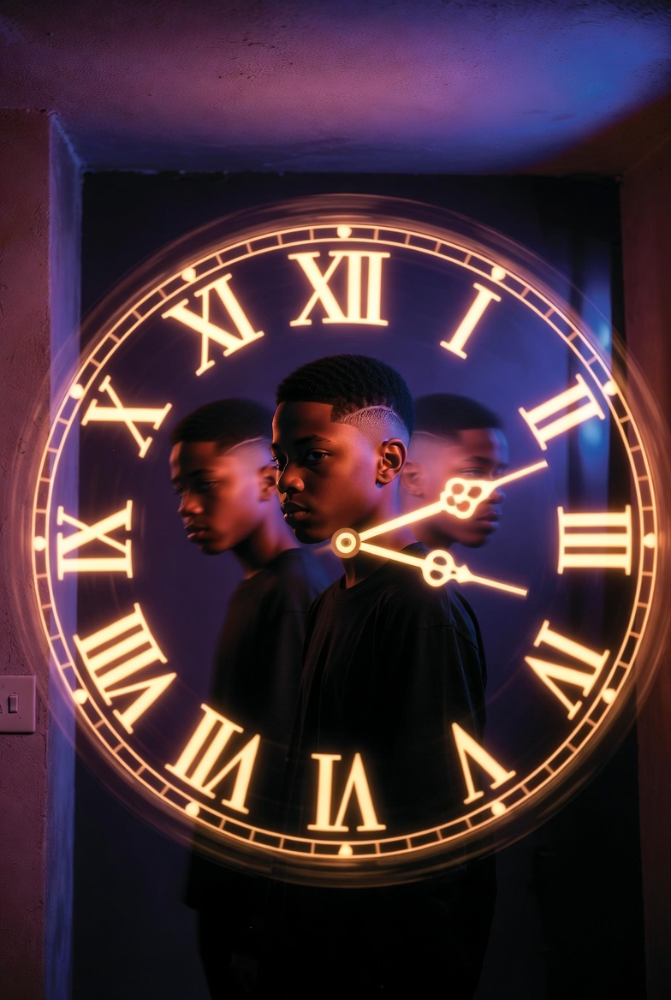
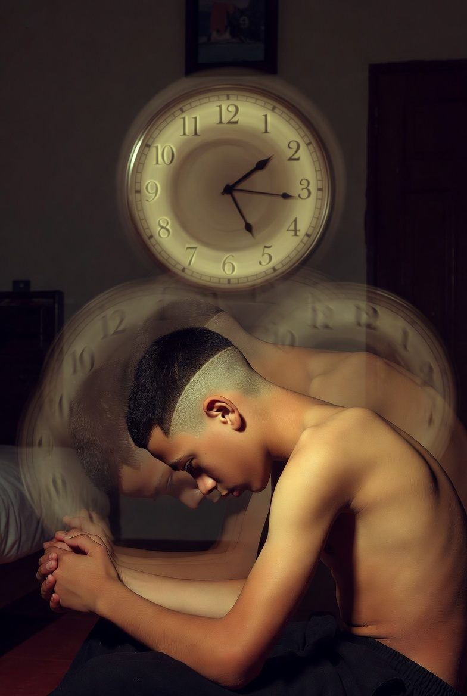

Trust me, being stuck in a loop is not the best place to get stuck. Trust me, it’s better being stuck in a hole than in a loop. Yh, I know you’re thinking “what tf is bro saying”… but trust me, you don’t wanna get stuck in a loop. (Even Dormamu from the MCU couldn’t handle it 🙃🥲)

Ok, now think of a scenario where you are stuck in a hole, then after minutes of struggling you get out. That sounds bad, right? Now imagine that same scenario happening once every 3 days… for eternity.
You know one funny thing is that for the first few occurrences you might not even know it’s a cycle… but the moment you know… it’s war time.
Cos you might try your best to avoid it but won’t be able to cos it’s a loop and you are still in it. You know it’s not about avoiding the loop but avoiding everything about the loop.
The people, the places, the thoughts, the habits… everything that pulls you back in. You try to change your route, change your mind, change the way you react… but somehow the same pattern still finds you.
Some days you think you’ve finally escaped. You feel different. You feel free. Then one random evening it hits again and you’re right back where you started. That’s the painful part. The hope that dies every single time the cycle repeats.
It messes with your head more than anything else.

You start questioning everything. Am I the problem? Is this my destiny? Why does this keep happening to me?
But lately I’ve been learning something important. Breaking a loop isn’t about one big fight or one big escape. It’s about small daily decisions. It’s about catching yourself before you fall into the same pattern again.
I don’t know if I’ve fully escaped yet. But I know I’m no longer blind to it. And that awareness alone is already changing something inside me. Maybe that’s how you finally break free… not by running away from the loop, but by becoming someone the loop can no longer recognize.
The end.
Yh, thanks for reading another real chapter of my life. You can check out more articles from the menu.